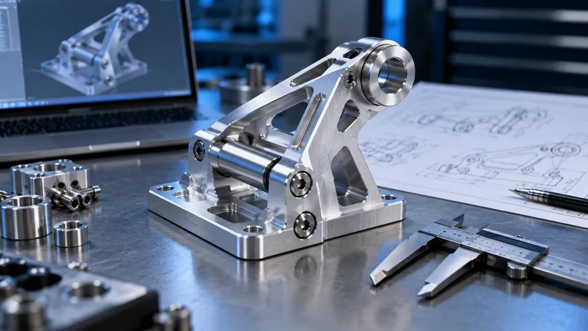
Product Development
From engineering concepts to practical design improvements, troubleshooting and validation.
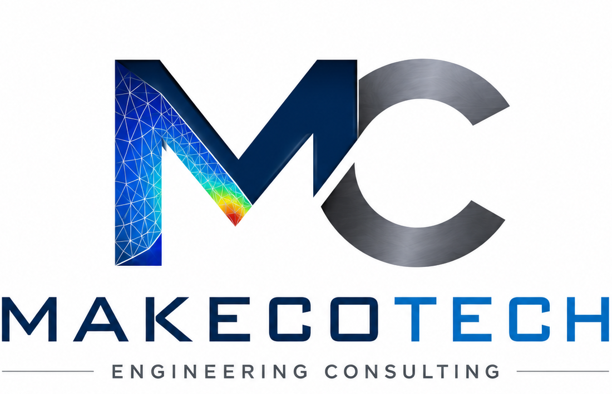
Advanced Engineering & Simulation Consulting
Based in Belgium, MakeCoTech helps companies across Belgium, the Netherlands, Luxembourg, Germany and the wider Benelux region solve complex engineering challenges through advanced engineering consultancy, finite element analysis, nonlinear material modeling, thermal analysis and product development support.
Our Expertise
Select a service to explore its capabilities and typical deliverables.

From engineering concepts to practical design improvements, troubleshooting and validation.
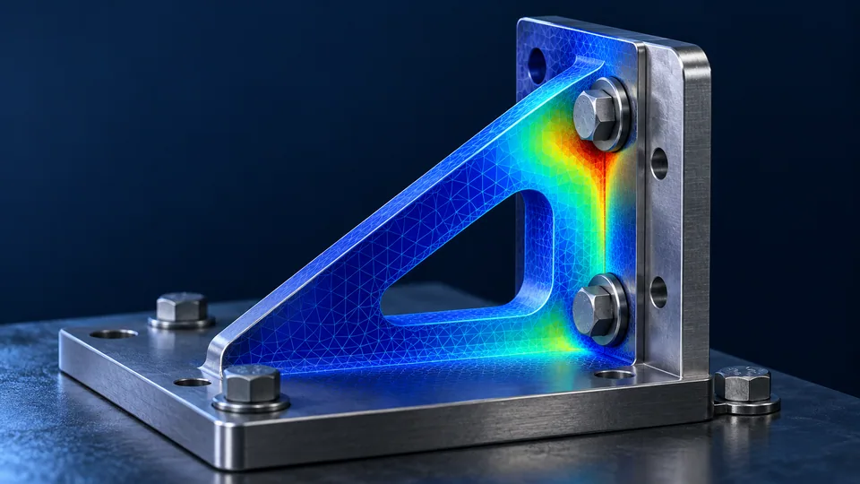
Structural and thermal analysis, nonlinear contact, friction, large deformation, impact and durability.
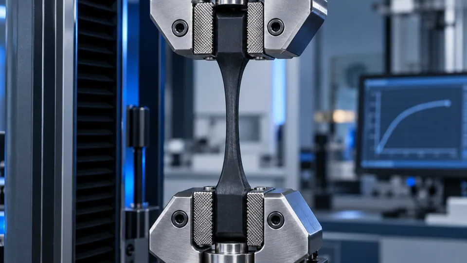
Nonlinear material model development and calibration for metals, ceramics, elastomers and rubber-like materials.

Sheet forming, stamping and deep drawing, with formability, thickness and springback assessment.
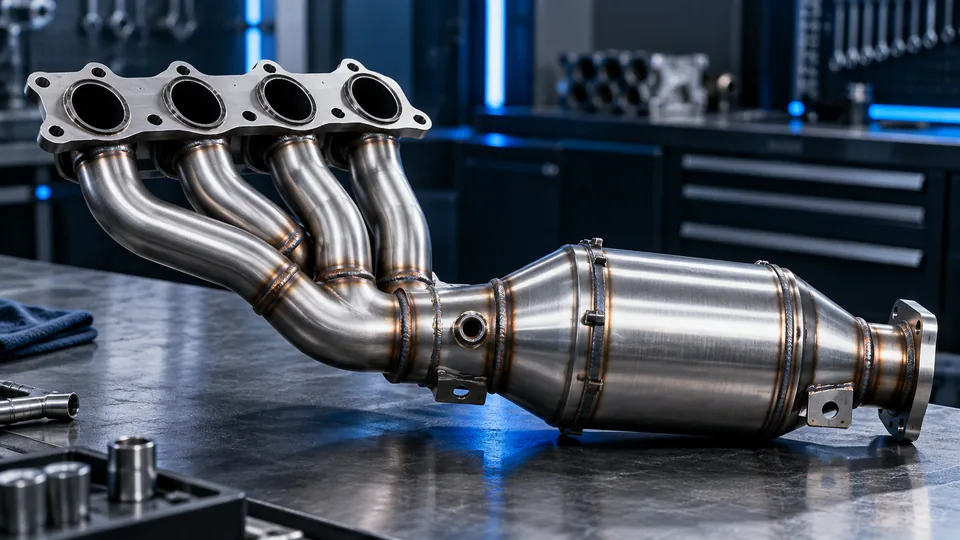
Exhaust and after-treatment development, thermal durability, vibration, fatigue and product validation.
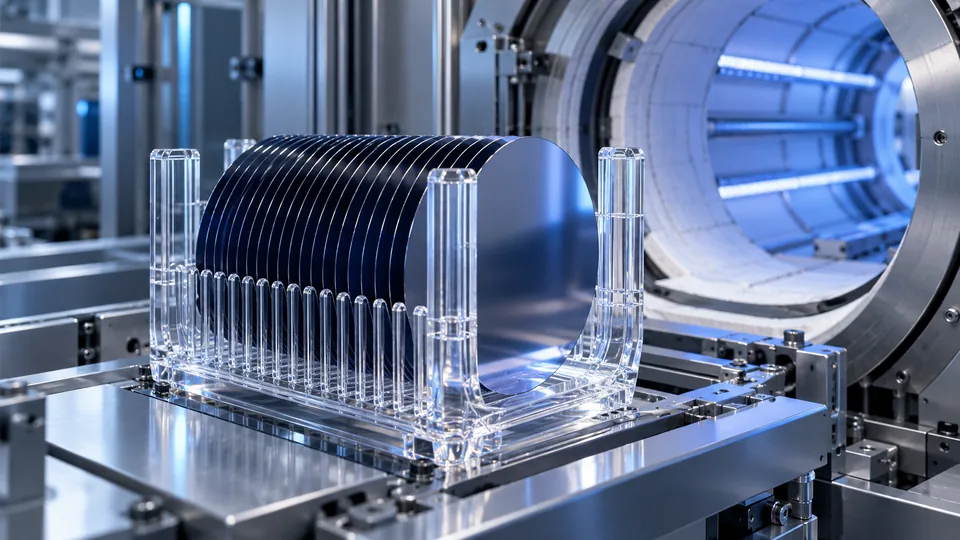
High-temperature CVD/ALD systems, wafer carriers and quartz, SiC and ceramic component assessment.
Technical Resources
Practical technical material covering finite element analysis, constitutive modeling, metal plasticity, sheet-metal formability, semiconductor equipment, and simulation-driven product development.
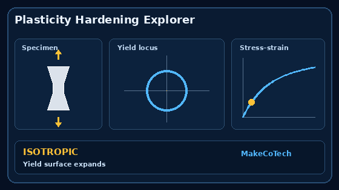
A practical guide to understanding how different hardening models influence yielding, reverse loading, the Bauschinger effect, cyclic plasticity and springback predictions.
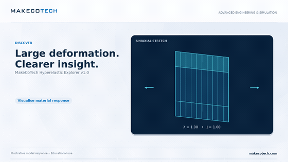
A practical guide to nonlinear hyperelastic materials, model selection and calibration, paired with MakeCoTech Hyperelastic Explorer v1.0.
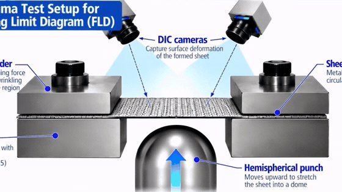
How experimental Nakajima testing builds an FLC, and how the MakeCoTech M–K / FLD Explorer can provide a numerical engineering estimate when test data is not yet available.
Simulation insights · LinkedIn
Engineering questions explored through simulation, shared on LinkedIn.
LinkedIn article
A simulation perspective on the relationship between bonding surface area and joint performance.
LinkedIn article
An engineering perspective on deposited film buildup and failure risks in semiconductor equipment.
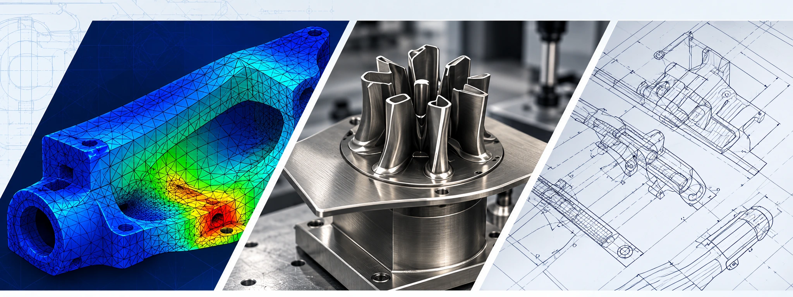
About MakeCoTech
MakeCoTech combines hands-on engineering development experience with advanced simulation expertise to support companies from concept design to validation.
We deliver reliable analyses, practical design recommendations and measurable engineering value.
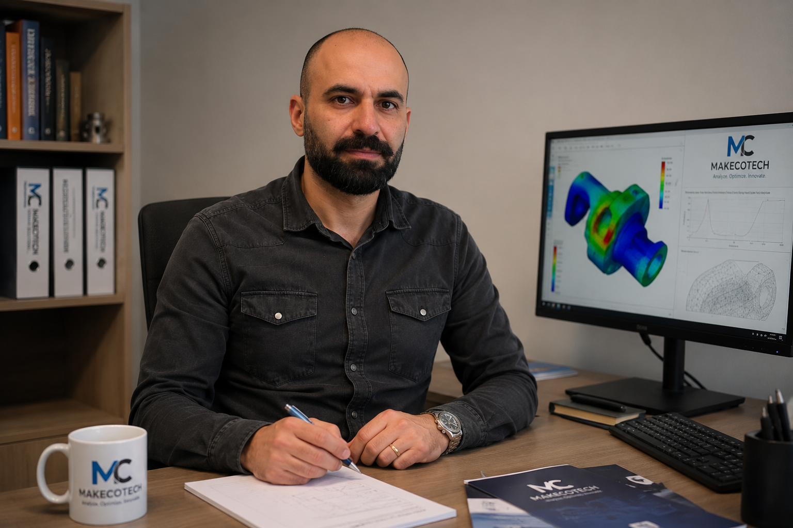
Meet the Founder
Kianoosh Marandi is a mechanical engineer and simulation specialist with more than 18 years of international experience in engineering development, advanced simulations and product innovation.
After obtaining his Master's degree in Mechanical Engineering, he worked as a Design Engineer for two years before pursuing a PhD at the National University of Singapore, where he graduated in 2012. His doctoral research focused on the nonlinear behaviour and advanced constitutive modelling of metallic composites and engineering materials.
Following his PhD, he moved to Belgium to work as a researcher and subsequently spent more than a decade in the automotive industry, contributing to the development of advanced automotive systems.
His work covered sheet metal forming simulations, nonlinear material formulations, structural and thermal analyses, and product development from concept to validation.
In 2022, he joined ASM in the semiconductor industry, where he contributed to the development of advanced high-temperature furnace systems and critical components made from quartz, silicon carbide, graphite and silicon, designed to meet demanding performance and reliability requirements.
Through MakeCoTech, Kianoosh aims to share his multidisciplinary expertise with a broader range of companies, helping them solve complex engineering challenges, accelerate innovation and transform ideas into reliable, high-performance products.
Start a Project
Contact MakeCoTech to discuss your analysis, design or development challenge.